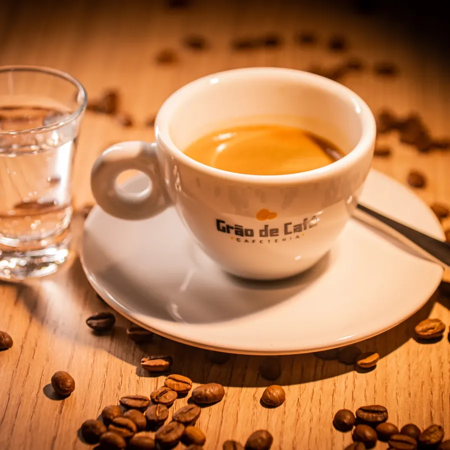

Da nossa vitrine
Venha nos visitar
Caldas do Jorro · Tucano-BA
Terça a sexta14h às 21h
Sábado e domingo07h às 09he 15h às 21h

Caldas do Jorro · Tucano-BA
A 1ª cafeteria de café especial da região
Caldas do Jorro · Tucano-BA